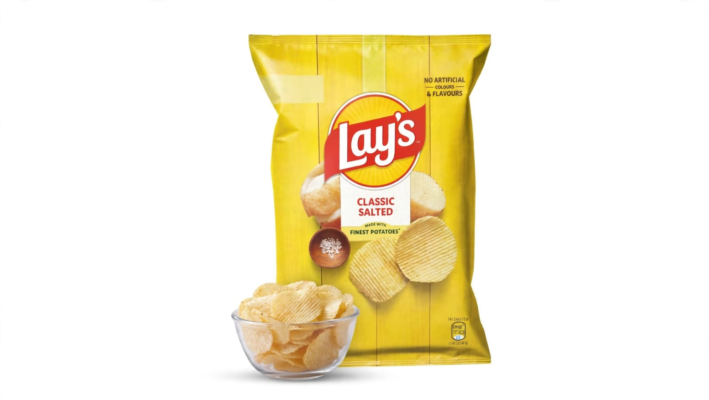

34%
OFF
OFF

4 MINS
Lay's Classic Salted Chips
Light salty crunch
80 g x 3
₹95 ₹144
🏪 Explore all products from Lay's
›
Ingredients
Potato, edible vegetable oil, palmolein oil, rice bran oil, iodised salt.
Description
Lay's Classic Salted delicious flavour will excite your tastebuds. Made from the finest potatoes. Lay's Classic Salted is a 100% vegetarian snack. A versatile snack that can be enjoyed in any occasion.